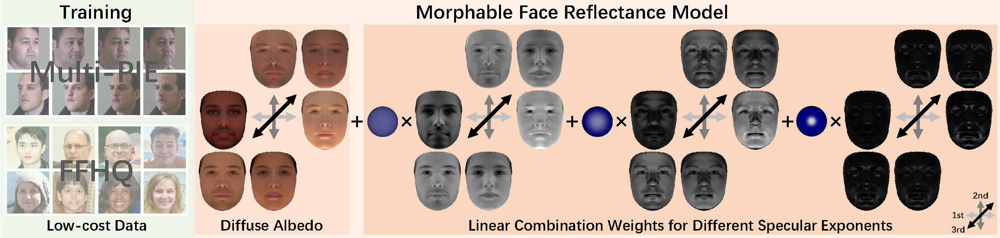

Learning a 3D Morphable Face Reflectance Model
from Low-cost Data
CVPR 2023

Abstract
Modeling non-Lambertian effects such as facial specularity leads to a more realistic 3D Morphable Face Model. Existing works build parametric models for diffuse and specular albedo using Light Stage data. However, only diffuse and specular albedo cannot determine the full BRDF. In addition, the requirement of Light Stage data is hard to fulfill for the research communities. This paper proposes the first 3D morphable face reflectance model with spatially varying BRDF using only low-cost publicly-available data. We apply linear shiness weighting into parametric modeling to represent spatially varying specular intensity and shiness. Then an inverse rendering algorithm is developed to reconstruct the reflectance parameters from non-Light Stage data, which are used to train an initial morphable reflectance model. To enhance the model's generalization capability and expressive power, we further propose an update-by-reconstruction strategy to finetune it on in-the-wild datasets. Experimental results show that our method obtains decent face-rendering results with plausible specularities.
Overview

We propose the first 3D morphable face reflectance model (ReflectanceMM) with spatially varying BRDF and a technique to train the model with low-cost publicly-available data. We represent face reflectance as a Lambertian BRDF combined with the linear combination of Blinn-Phong BRDFs with different predefined specular exponents. The reflectance parameters for each face vertex are the diffuse albedo and a set of weights. We show the first 3 principal components of diffuse albedo and spatially varying weights here in non-linear sRGB space.
OLAT Rendering Results
We test our method on the challenging One-Light-At-a-Time (OLAT) setup. Our method can render decent high-frequency facial specularities.
Face Relighting Results
Our method can obtain realistic rendering results under real-world environment map.
Comparison to Previous Morphable Face Model
Compared to BFM09, our method successfully render plausible facial specularities since we adopt a non-Lambertian reflectance representation. Compared to AlbedoMM, our method achieves more realistic results since we can model both spatially varying specular intensity and shiness. Please ignore the color difference and only focus on the distribution of facial specularities since we do not have the ground truth light color information of the Multi-PIE dataset; we render our method and the competitors using the same white point light source for a fair comparison.
Citation
@inproceedings{han2023ReflectanceMM,
author = {Han, Yuxuan and Wang, Zhibo and Xu, Feng},
title = {Learning a 3D Morphable Face Reflectance Model from Low-cost Data},
booktitle = {CVPR},
year={2023}
}